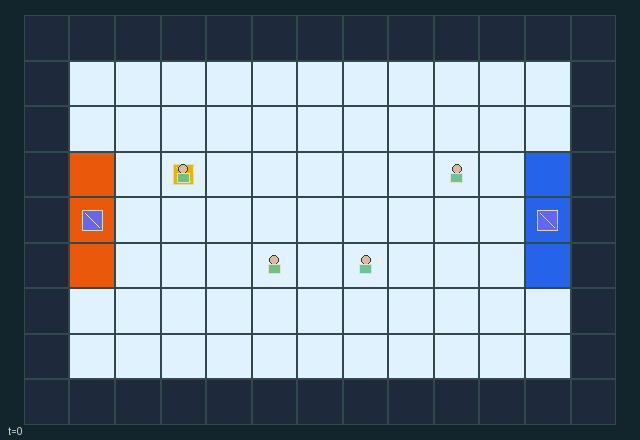

GI105 · Two-Stride Relay Arena

Two teams relay a physical token through space. An allied in-flight catch arms scoring; carry the armed token onto your three-cell target goal.
Identity and original contract
4 independently actionable roles; 11 discrete commands per role; 182 native observation columns per role; original horizon 96 steps. Declared per-step reward range: -1 to 1. Observation regime: fully_observable.
Source SHA-256: 994910a436c59589c5c58c73badc570d3df80fc880e10b527c42dca5d2c55e7f
The objective, rewards, population, map and horizon remain original. A preview is not a success claim.
Objective and gameplay
Two teams relay a physical token through space. An allied in-flight catch arms scoring; carry the armed token onto your three-cell target goal.
Each possession permits only two successful carrier moves and drops after four held ticks. Cardinal throws advance a real token one tile per transition. Teammate receiving and opponent guarding extend contact reach; interceptions and adjacent tackles reset goal arming. Bodies block each other routes.
- Teams (0,1) and (2,3) carry a physical relay token to the opposite marked goal zone.
- An in-flight catch from your teammate arms a goal. Loose pickups, interceptions and tackles clear arming.
- Each possession permits two successful carrier moves. Four held ticks force a drop.
- Cardinal throws travel one real cell per transition for up to six cells; walls stop the token.
- Direct cell contact catches automatically when unlocked. Receive reaches one tile for allied tokens; guard reaches one tile for hostile tokens.
- Contact resolves by distance, then hostile guard, then rotating role priority.
- A guard can steal from an adjacent opposing held carrier; newly caught tokens are protected for that tick.
- Same-cell destinations and entry into another player start cell are blocked, even if that player moves away.
- A carried armed token on the target goal ends play with +1 per winner and -1 per opponent; otherwise step 96 truncates.
- All players, token trajectory state, possession timers, map and events are public and bound to actual state.
Ending: The first armed-token carried goal naturally ends play; otherwise horizon 96 truncates. Natural completion at the horizon takes priority.
What this game explores
Commitment, exchange & governance: Promises consume time, liquidity, access or material. Separate an announced agreement from a binding commitment and from its eventual delivery; log cancellation and expiry too.
Joint transport & shared access: Positions, load geometry, occupancy and persistent access constrain whose action can succeed next. Distinguish physical handoff, shared controls and simultaneous force from a cosmetic cooperation label.
Team opposition & interception: Cooperation within a team can coexist with opposition between teams. Preserve team membership, capture and possession rules, and report each team's outcomes instead of assuming a single shared return.
These are questions supported by rule structure, not observed learning effects.
Play it: operating walkthrough
crucibles play --game gi105Keep Python running and open its printed address. Select this game, set a seed and press Create session. The game itself is always English.
Assign a role range to Host with Assign / take over, or Assign all roles. Invite a second participant with Create player invitation, then assign a disjoint subset. Every original role is available.
For every owned role choose a legal command and press Queue. Arrow keys / WASD queue a declared directional action for the current role camera when available. Space or Advance one joint step advances everyone together. Non-directional games use the selectors.
Unqueued roles use the labelled untrained uniform-legal policy. Take over or release roles before the next step without resetting. Full-state debug is privileged and permanently logged; role cameras preserve permissions. Close the session to retain logs. Server restart does not restore sessions.
Complete command reference
IDs and English labels exactly match the manifest. Availability depends on role, resources, location and phase. An available action can still have no productive effect.
0·Wait
1·Move north
2·Move east
3·Move south
4·Move west
5·Throw held token north
6·Throw held token east
7·Throw held token south
8·Throw held token west
9·Guard: reach for hostile token or tackle adjacent carrier
10·Receive: reach for allied or neutral loose token
Roles and capability identifiers
These original role names describe capabilities, not interchangeable skins. Check each owned role's legal selector before planning handoffs.
agent_0·Team 0 kickoff carrier
agent_1·Team 0 support receiver
agent_2·Team 1 defender
agent_3·Team 1 support interceptor
Information and observation permissions
Fully observable public map, every player and token position/velocity/possession/timer, goals, scores and actual event flags. All entity masks are true; each float32 feature is an integer divided by 128.
The GIF is full-state debug and may reveal hidden entities or private state. Train on obs[agent], not the picture, state tree or another role's private row. Field slices and visibility are in the original manifest.
Reinforcement-learning integration
import jax
from crucibles_jaxmarl import make
env = make("gi105")
key = jax.random.PRNGKey(0)
key, rk, ak, sk = jax.random.split(key, 4)
obs, state = jax.jit(env.reset)(rk)
actions = env.sample_actions(ak, state)
obs, state, rewards, dones, info = jax.jit(env.step_env)(sk, state, actions)
done = dones["__all__"]Observations are float32 vectors of width 182; actions are scalar int32; masks have 11 entries. Supply all 4 roles each transition. Masked sampling is an engineering reference, not a trained learner.
step_env retains terminal data without reset. step performs outer autoreset and keeps terminal data in info["raw_state"] and info["raw_observation"]. Use dones["__all__"] for episode boundaries; separate completion, failure and time limit in analysis.
JIT or vmap equal identities and shapes. Split independent reset, policy and transition keys. Group different shapes explicitly; do not shrink the population or horizon. Host rendering stays outside training.
Training questions and fair evaluation
Define valid completion from the objective before fitting. Preserve original rewards and also report real deliveries/services, losses, resource state, unresolved episodes and per-role returns. Animation is not a reward signal.
Promises consume time, liquidity, access or material. Separate an announced agreement from a binding commitment and from its eventual delivery; log cancellation and expiry too.
Positions, load geometry, occupancy and persistent access constrain whose action can succeed next. Distinguish physical handoff, shared controls and simultaneous force from a cosmetic cooperation label.
Cooperation within a team can coexist with opposition between teams. Preserve team membership, capture and possession rules, and report each team's outcomes instead of assuming a single shared return.
Compare memory, communication or centralized critics under matched actor information. Declare critic access; keep actor inputs role-filtered. Match partner/opponent distributions, masks, compute and checkpoint selection. Final tests never enter fitting or selection.
Independent training runs or source-pairing blocks are inferential units; episodes from one policy are not independent training replications. Save hashes, keys, versions, device, time and cost. Negative, zero, failed and indeterminate outcomes are valid. No trained checkpoint or target score is supplied.
Classification and evidence
Overlapping editorial labels are reading aids, not proof of novelty, difficulty, strategic equivalence or learning effects.
- Commitment, exchange & governance
- Evidence
scene.rules.2: Each possession permits two successful carrier moves. Four held ticks force a drop.
- Joint transport & shared access
- Evidence
manifest.task.objective: Two teams relay a physical token through space. An allied in-flight catch arms scoring; carry the armed token onto your three-cell target goal.
- Evidence
manifest.actions.9: Guard: reach for hostile token or tackle adjacent carrier
- Evidence
scene.rules.0: Teams (0,1) and (2,3) carry a physical relay token to the opposite marked goal zone.
- Team opposition & interception
- Evidence
manifest.task.objective: Two teams relay a physical token through space. An allied in-flight catch arms scoring; carry the armed token onto your three-cell target goal.
- Evidence
scene.rules.1: An in-flight catch from your teammate arms a goal. Loose pickups, interceptions and tackles clear arming.
- Evidence
scene.rules.8: A carried armed token on the target goal ends play with +1 per winner and -1 per opponent; otherwise step 96 truncates.
Source, receipts and preview limits
The world-only English GIF replays saved untrained legal actions through the original kernel. At most 25 actual endpoints include initial and terminal state; no invented interpolation. It is full-state debug, not the role observation.
Original source, observation slices, manifest and mechanism
Native receipt · Presentation receipt
Engineering passes do not establish learning. Nonzero floating differences remain recorded and undetermined; no new tolerance was introduced. Human scores remain unverified.